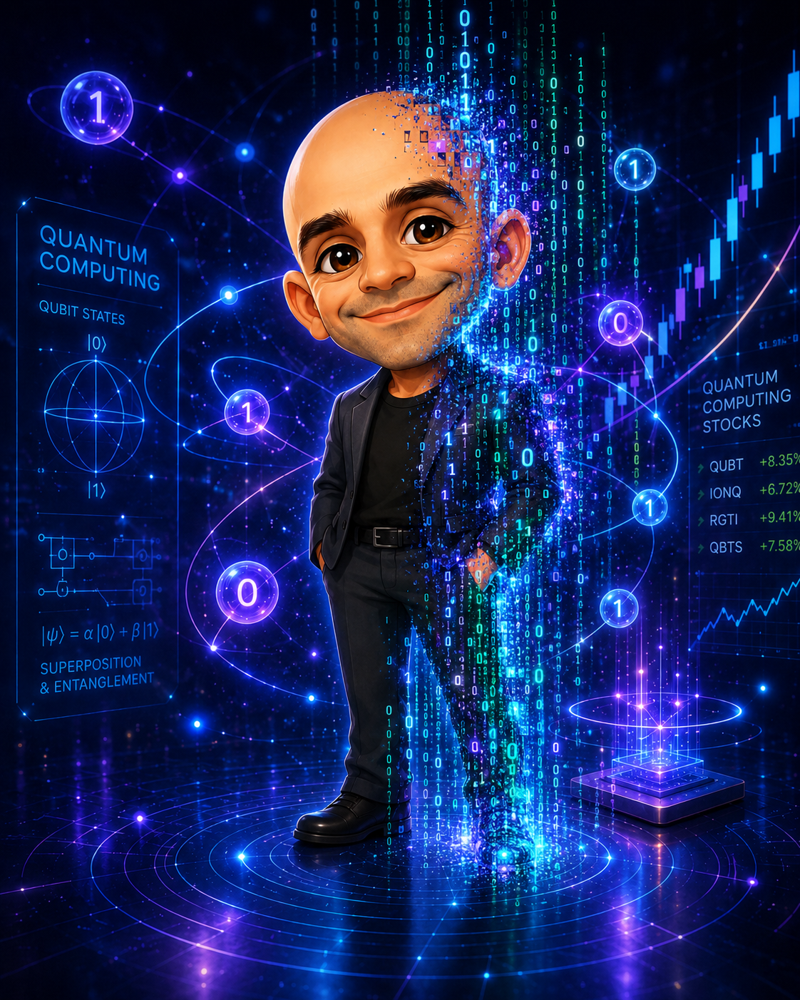

Os subsetores do computing quântico e as empresas representativas de cada um — hardware por modalidade de qubit, a stack de software, e o supply chain "picks & shovels".
12 nichosEra NISQJun 2026Tickers verdes = cotadas em bolsa
|1⟩|0⟩

IONQ cotada em bolsa (ticker)privada privada / dentro de giganteVolatilidade extrema nos pure-plays — sleeve especulativo, não core.